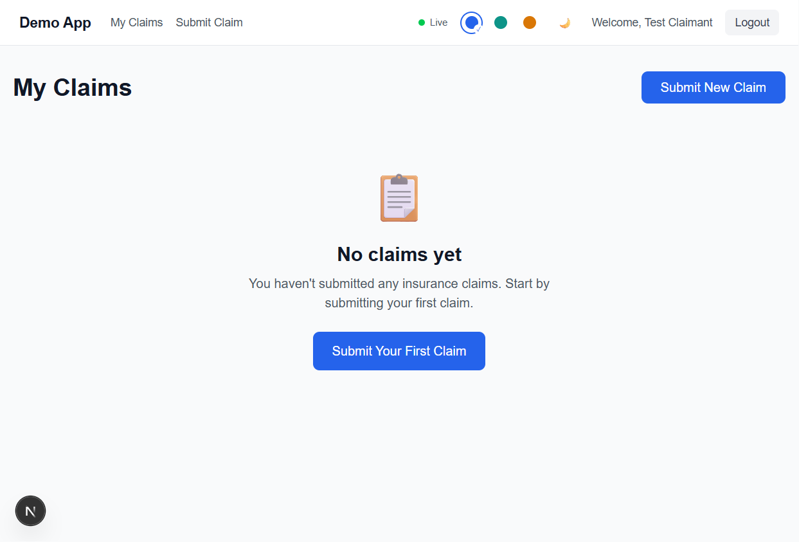
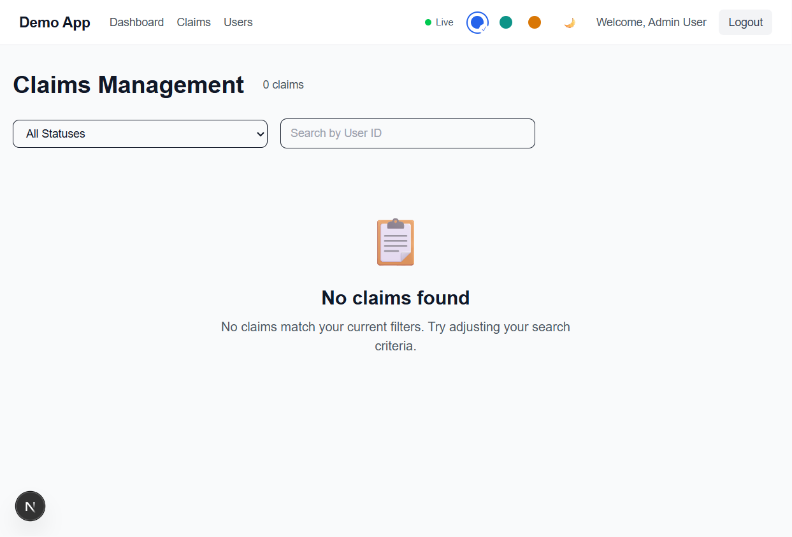

The app shows a connection badge that flips to “Offline” or “Reconnecting…” even while the page is otherwise live. This makes the app look unstable and can hide the real state of the live data feed.
Impact: Users may not know whether the screen is current, stale, or disconnected.
In the admin claims view, the UI can display “0 claims” and “No claims found” even while the application is running normally. This can look like a data loss issue when it is actually a UI/data refresh problem.
Impact: Admin users may wrongly conclude there are no claims in the system.
The app handles WebSocket status messages by casting values without robust validation. If unexpected values arrive, the UI can update incorrectly.
Impact: Wrong or malformed statuses may be displayed in the interface.
Updated-claim highlight timers are tracked but not always cleaned up reliably. Repeated changes can leave stale timers behind and degrade responsiveness.
Impact: Slower UI behavior and potential memory growth over long sessions.
When the app tries to refresh data after a real-time event, some failed API calls are only logged in the console, not surfaced to the user.
Impact: Users are left with stale data and no explanation.


| Issue | Evidence | Impact |
|---|---|---|
| Connection status is inconsistent | The UI shows a live indicator in the header while the claims page can still show unstable or stale behavior. | Users do not know whether data is fresh or delayed. |
| Claims page can show empty results without explanation | Admin claims page reported “0 claims” and “No claims found”. | Users may believe there are no claims in the system or that the page failed. |
| Live payload validation is weak | WebSocket messages are accepted and cast with minimal validation. | Unexpected status values can affect displayed claim state. |
| Timer cleanup is risky | Highlight timeouts are tracked in a state store but can accumulate over time. | Long sessions can become slower and less stable. |
| Background failure handling is poor | Refresh failures are only logged to the console. | Users may be left with stale screens without a warning. |
The main issue is not a broken login flow or complete app crash. The app is mostly functional, but the user experience is not consistently trustworthy because claim data, live state, and connection health can be misleading. This is a correctness and confidence problem, not just a cosmetic one.